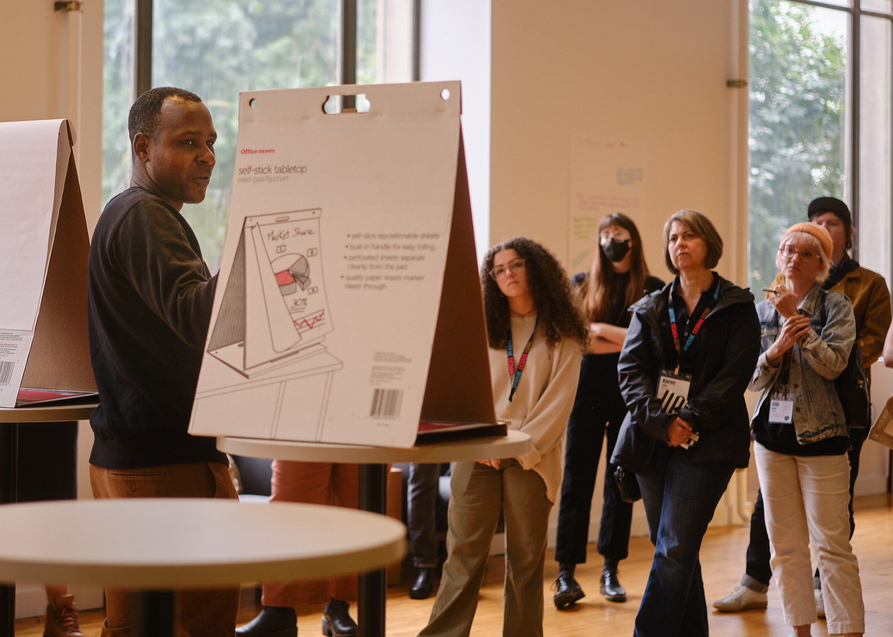

Faculty
Ron Bronson is an assistant professor of practice in Urban Technology at the University of Michigan’s Taubman College of Architecture and Urban Planning, where he has taught since 2024.
All three of his courses come back to public mechanics: how a service behaves for the person on the receiving end.


Courses
- UT 402
Public Mechanics: How Services Work
Taubman College, Fall 2026, Winter 2026
- UT 330
Interaction Design and Urban Experiences
Taubman College, Fall 2026
- UT 360
Service Design and Urban Needs
Taubman College, Winter 2026, Winter 2024
- ART 230
Business of Visual Art
Community College of Aurora, Spring, Summer and Fall 2009
Class projects
- 2026
Service Design Weekend at the University of Michigan. Organizer and panel moderator.